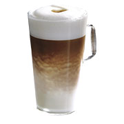
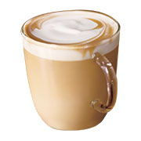
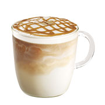

Latte Macchiato
Combinación de leche finamente vaporizada y shots de Espresso Roast, finalizado con un punto de café.
Vainilla Latte

Delicioso café espresso con leche al vapor y dulces toques de vainilla. Todo esto coronado con una sutil capa de espuma de leche.
Skinny Vainilla Latte
Delicioso café espresso con leche descremada al vapor y toques de vainilla sin azúcar. Todo esto coronado una sutil capa de espuma de leche.
Caramel Macchiato
Leche descremada al vapor "manchada" con espresso y vainilla, cubierta con un característico dibujo de caramelo.